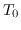
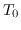

Next: Antenna gain considerations and Up: Some theory Previous: Some theory
At millimetre wavelengths, the atmosphere can no longer be approximated
as perfectly transparent. It degrades overall sensitivity in two
ways: the atmosphere emits radiation, and so raises the
system temperature, and the atmosphere attenuates the astronomical signal.
For a zenith opacity  , observing at an elevation of e, and
if the atmosphere is approximated as having a uniform temperature
, then the atmospheric contribution to
system temperature is
, observing at an elevation of e, and
if the atmosphere is approximated as having a uniform temperature
, then the atmospheric contribution to
system temperature is
In converting correlation coefficients to visibility measurements, we can notionally include the effect of the atmospheric attenuation either in the effective system efficiency factor, or in an effective system temperature. The approach used will depend on the calibration scheme implemented at the telescope.
For the ATCA at 3-mm wavelength, it is most natural to include the effect of the opacity in an effective system temperature - the so-called ``above atmosphere'' system temperature. The above atmosphere system temperature is simply the physical system temperature divided by the atmospheric transmissivity. The widespread use of above atmosphere system temperatures in millimetre astronomy is in part because it can be measured directly. It can be deduced by periodically flipping an absorber at atmospheric temperature in front of the feed system. The technique to do this is the so-called ``chopper wheel'' method (e.g. Ulich 1980). The ATCA uses the chopper wheel method (also call paddle or vane calibration) in its 3-mm system to determine an above atmosphere system temperature.
This measurement will only be done occasionally. That is, unlike the centimetre and 12-mm bands, continuous measurement of system temperature is not available at 3-mm wavelength. To partly remedy this, Miriad's atfix includes an algorithm to ``interpolate'' the above-atmosphere system temperature measurements based on changes in telescope elevation and weather.
Miriad manager